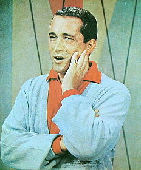

Thursday, September the 2nd, 2004
back to: title, date or indexes
Have you, or someone you know, got a great anecdote about gigantic balls of volatile gas? Why not share it with our readers? At one time or another, all of us have been confronted by unimaginably vast orbs of gas, glowing perhaps, or even pulsating eerily, as if about to explode, unleashing destruction and doom. It seems a shame to keep your experience to yourself. Perhaps you were traumatised, and begin to gibber and drool when recollecting what happened? Or maybe you have tried to shut out the memory entirely, so that only in your nightmares do you revisit the scene? Whatever your own way of dealing with monstrous, bright, spherical gas phenomena, we will be pleased to hear from you. The most riveting submissions will be collected in a forthcoming Hooting Yard anthology, for which we have already signed up Perry Como to write the preface. Some readers will be aware that Mr Como unfortunately crossed to the Other Side on 18th May 2001. He will be dictating his preface, via an angel, to a spirit medium yet to be appointed (possibly Yoko Ono)..

Perry Como : sprightly preface from beyond the grave
Hooting Yard on the Air, September the 8th, 2004 : “Escape From a Ship on Fire” (starts around 23:33)